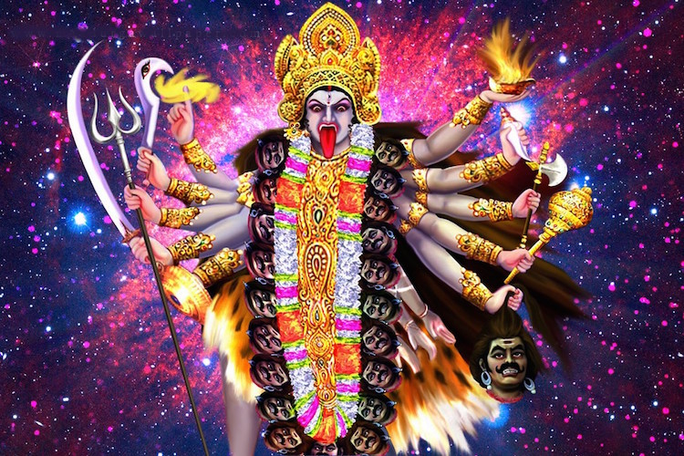
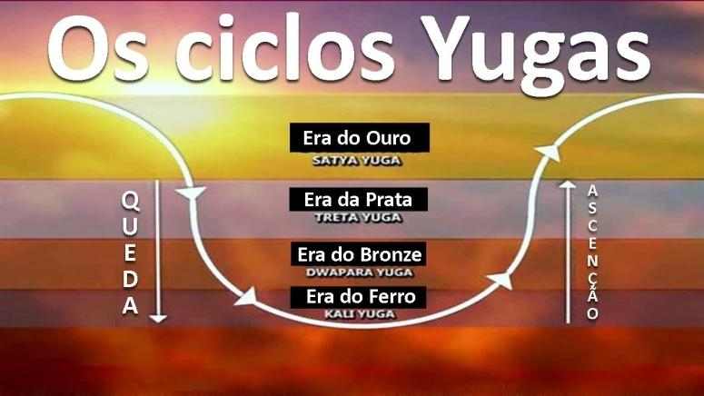

A Kali Yuga como esposa da modernidade
Para iniciarmos a essa discussão enormemente complexa e delicada nos dias de hoje, devemos por começar a explicar uma cosmo visão religiosa a respeito do “Apocalipse” bem estranha para os ocidentais, que é a Kali Yuga, ou a era de Kali.
O que são as eras yugas?
As eras Yugas fazem parte da cosmovisão hindu, a respeito dos ciclos cosmológicos, e em cada ciclo ou era, acontece determinadas coisas, coisas estas que explicarei agora.
Satya yuga:
é a era dourada ou era da verdade, também conhecida como a era da perfeição. Nessa época, as pessoas viviam de acordo com os valores espirituais, com pureza de pensamentos, palavras e ações. Havia um grande respeito pela natureza e pelos seres vivos. A duração de Satya Yuga é de 1.728.000 anos.
Treta Yuga:
é a era da criação e da destruição, caracterizada pelo surgimento das primeiras grandes cidades, pelo uso da tecnologia, pela busca de poder e riqueza. Nessa era, as pessoas ainda mantinham uma conexão com a espiritualidade, mas começaram a surgir desequilíbrios e conflitos. A duração de Treta Yuga é de 1.296.000 anos.
Dvapara Yuga:
é a era da dualidade, caracterizada pela divisão da sociedade em castas, pela ascensão do egoísmo e da ganância, pelo aumento da violência e da corrupção. A espiritualidade ainda era valorizada, mas de forma superficial. A duração de Dvapara Yuga é de 864.000 anos.
Kali Yuga:
é a era das trevas, a era da discórdia, da ignorância e da degeneração. Nessa época, as pessoas se afastaram da conexão com o Divino e se concentraram em preocupações materialistas e individualistas. A tecnologia, a ciência e o racionalismo são vistos como expressões dessa ilusão, que mantém a humanidade presa em um estado de ignorância e escuridão. A duração de Kali Yuga é de 432.000 anos.
A Kali Yuga
Como explicado anteriormente a Kali Yuga é a era da discordância, ou a era da perca da conexão com a metafísica, ou o Além físico. Nesta era o que reina é o pensamento materialista, e cientificista moderno. Há a crença de tudo o que fuja do imaterial é loucura, ou no mínimo algo “supersticioso”, algo que em outra época seria levado como algo sério, como deveria ser. Há vários filósofos que tentam explicar esse fenômeno da Kali Yuga, como o René Guénon e o Mario Ferreira dos Santos, aqui eu falei um pouco sobre a explicação do Mário, mas não como a de Guénon que eu darei mais ênfase.
Mario Ferreira dos Santos e a “Filosofia da Crise”.
Neste livro o Mário dá como explicação a perca do sentido de unidade do pensamento, ou em palavras mais brandas a perca da conexão entre a matéria e o espiritual. Antigamente todas as sociedades acreditavam que fenômenos estavam ligados com o mundo espiritual, como por exemplo: se houvesse uma enorme chuva eles creditariam aquilo a Zeus, ou a Poseidon. Em outros casos eles fariam algo similar, sempre ligando o “Céu e a terra”, não teria apenas a questão material, como nós temos hoje em dia, onde tudo que está além desta é considerado como loucura fanática e religiosa.
René Guénon La crise du monde moderne (A crise do mundo moderno)
Guénon tinha o pensamento similar ao de Mário ferreira dos Santos, mas de formas diferentes. Guénon acreditava que a crise do mundo moderno se dava no afastamento da real espiritualidade, ou a espiritualidade “Esotérica”, afirma que nós hoje em dia possuímos apenas a espiritualidade exotérica, ou a casca. E que havendo perdido o senso dessa real espiritualidade haveriamos caído no pensamento materializado e cientificista, a conexão entre os “Céus e terra” haviam se quebrado, e no lugar do pensamento intuitivo haveria entrado o pensamento especulativo, ou aquele tipo de pensamento típico de programadores e matemáticos, algo que não vai além do material. Há também a feminização das sociedades, algo que era outra hora totalmente patriarcal e torna-se matriarcal, e se você for observar o feminino nas tradições, ele é ligado a terra ou a matéria, há quem diga também que a mulher é a natureza, e o homem é o céu, ou o contato entre a terra e o céu. O feminino também é explicado pela a falta de forma, ou a liquidez e esta maleabilidade traria desordem e falta de direção para as sociedades, se governadas por mulheres,
Guénon era um muçulmano e Mário ferreira dos santos um católico, e mesmo assim, ambos concordavam com o diagnóstico do “mundo moderno”, e os fizeram pois o fato era verdadeiro.
E lembre-se o mundo moderno não é algo abstrato, mas sim algo que está em todas as facetas da nossa realidade, então tome cuidado, as vezes você já é um “moderno”.